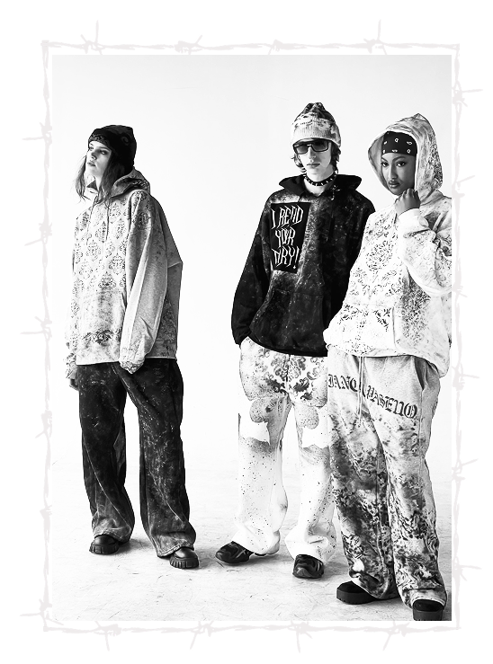

SUSTAINABILITY
How has sustainability impacted your campaign and the visual aspect of your brand?
It has impacted the visual aspect a little bit because I do love to work with denim and using kind of raw edges and working with the shapes that I have when using fabric scraps. So I think that it's really helped me work geometrically within my designs which I really enjoy doing. It still has stayed true as far as the aesthetic hasn't changed due to sustainability. But it has inspired some interesting works of mine that I wouldn't have achieved without it.